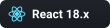
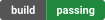

Perl · No dependencies
SVG badges, generated straight into your README
Drop a marker comment in your Markdown, run one script (or the GitHub Action), and get logo + text badges rendered as real SVG — spliced back into the file in place.
How it works
Marker in, SVG out
No build step, no template engine. The script scans your Markdown for marker comments and rewrites only what's between them.
Write a marker
Drop <!--[[ badge: logo=php label="PHP" message="8.5" ]]-->...<!--/--> anywhere in your README.
Run the script
perl sigilbadges.pl — or wire it up as a GitHub Action, no interpreter setup required.
SVG is written
Each distinct badge is rendered once to assets/badges/ and only rewritten if its bytes actually changed.
README is spliced
The marker's body is replaced with the rendered <img> — re-running is always safe and idempotent.
Styles
Five renderers, one grammar
Pick a look per badge, or let chip (the default) handle it.

chip
Gradient chip, logo first — this project's own look.

flat
The classic shields.io two-tone look.
flat-square
Same as flat, sharp corners.
plastic
Two-tone with a glossy highlight band.
for-the-badge
Bigger, bold, uppercase text.
Quick start
Command line
perl sigilbadges.pl [--file README.md] [--badges-dir assets/badges] [--check]Or as a GitHub Action:
- uses: lucianofedericopereira/sigilbadges@v0.1.0
with:
file: README.md